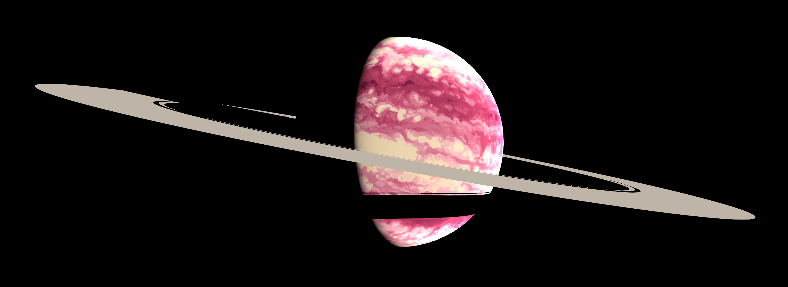

人造日本人
みかぶるのホームページ
2018-7-2開設 2019-5-19FC2からGitHubに移設
絵
絵2
架空惑星のモデル置き場
わらびもち
リンク集
アカウント
Twitter:
@Mikanixonable
/
@Eustralo
(サブ)
Mastodon:
@Mikanixonable@mstdn.jp
ツイキャス:
@Mikanixonable
Artstation:
Mikanixonable
Pixiv:
みかぶる
Tumblr:
Mikanixonable
ニコニコ動画:
みかぶる
ニコニコ静画:
ニコニコ静画
SoundCloud:
みかぶる
趣味で作った曲
お題箱:
みかぶる((🍊))
Askfm:
みかぶる(@Mikanixonable)
マシュマロ:
みかぶる
Peing:
みかぶる
Instagram:
@Mikanixonable
植物の写真とか
Eter9:
Mika Mikahara
TikTok:
@31438527089
GitHub:
Mikanixonable
コンテンツ
Unicodepod
かわいい文字をツイートする半手動botです
Blog
放置
小説
自作言語の辞書
外部リンク
つぉりてぃあ
The World of Conlangs
amuhiku
人工言語のWeb辞書を作れるサービス